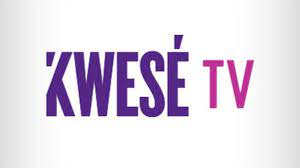

Work Experience
Technical Support Analyst - Ship Logic
Bob Group
March, 2022 - Current
Responsibilities Included but not limited to:
- Respond to customer inquiries and provide technical support to resolve issues
- Collaborate with cross functional teams to ensure seamless integration and implementation of new features
- Perform thorough testing of new and existing features to identify potential errors or areas of improvement
- Analyze system and user data to identify patterns in errors and develop and implement solutions to improve the overall user experience
- Serve as a trusted consultant to clients, offering expert advice and customized solutions to address their specific needs and challenge
- Maintain a strong and positive relationship with customers, acting as the primary point of contact and facilitating effective communication between all parties
- Continuously monitor customer feedback to identify areas for improvement and proactively address any concerns or issues
- Utilize a customer focused approach, delivering exceptional customer service and ensuring customer satisfaction
- Adhere to industry standards and regulations to ensure quality and accuracy of technical support and services provided
Customer Service Consultant - Bob Go
Bob Group
January 2021 - February 2022
Responsibilities Included but not limited to:
- Responded to customer inquiries and resolved their technical issues regarding the uAfrica platform.
- Provided technical support for issues related to Shopify, Woocommerce,and BidorBuy.
- Conducted sales presentations to potential clients, explaining the benefits of the uAfrica platform and ensuring successful sign-up
- Managed incoming courier emails and calls and assisted with parcel tracking.
- Maintained high levels of customer satisfactions by proactively following up on pending queries and ensuring timely resolution.
- Adhered to the company's service level agreement (SLA) for response times to unresolved queries.
Civil Engineering Consultant
Kazuo Resources (PTY) Ltd.
June 2018 - December 2020
Responsibilities Included:
- Conducts thorough research and analysis for ongoing projects, including legislative research.
- Provides support for waste management projects.
- Drafts and reviews reports on ongoing projects and initiatives to be shared with key partners
- Edits and reviews completed project reports, including site inspection reports.
- Manages customer support, responding to inquiries via phone calls and emails.
- Maintain project quality and ensure timely delivery by regularly updating team members and project managers on workload and deadlines.
Customer Service Consultant

Kwese
March 2017 - May 2018
Responsibilities included:
- Provided customer service through online platforms, social media, live webchats, phone calls, NOC phone, and email.
- Developed sales and marketing skills, met monthly targets, and assisted with product recommendations and locating based on customer location.
- Assisted with daily and monthly reports, followed up on pending customer issues, and maintained professional customer relationships.
- Worked as a data capture specialist,using CRM system to register and update customer profiles.
Admissions Officer/Customer Service Representative
Monash South Africa
January 2014 - June 2014
Responsibilities included:
- Processed undergraduate study applications for prospective students.
- Provided exceptional customer service through prompt response to admission enquiries and application updates via phone calls and emails.
- Managed student profile updates on the school's system and assisted with fee and billing updates for current and new students.
Procurement Officer
Benray Global Enterprise
November 201 - February 2012
Responsibilities included:
- Procured contracts and managed logistics for the company.
- Developed and maintained relationships with clients and stakeholders.
- Coordinated and managed communications, including marketing and advertising efforts.
- Oversaw socia media and information platforms.
- Contributed to project reports and documents and maintained project files and records.
- Provided technical support and acted as a back-up team member during absences.